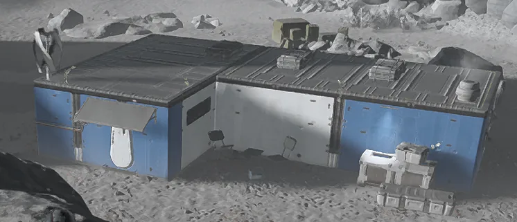
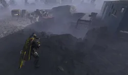
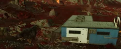
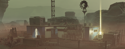

L Shaped House
L Shaped House

基本信息 信息
阵营
描述
A blue and white L-shaped house.
This 条款 is a stub.
You can help by expanding it.
Instructions: Needs images for the Mine and the 支援武器
Instructions: Needs images for the Mine and the 支援武器
the L Shaped House is a 小型 human 建筑, which can be found during missions.
次要特殊地点
| 变体 | 图像 | 目录 | 备注 |
|---|---|---|---|
| 货物集装箱 |  |
|
|
| 矿场 |  |
|
| 变体 | 图像 | 目录 | 备注 |
| 舱 |  |
|
很少情况下，该变体会生成时没有pod，且支援武器/主武器带有on 弹匣（可能是bug） |